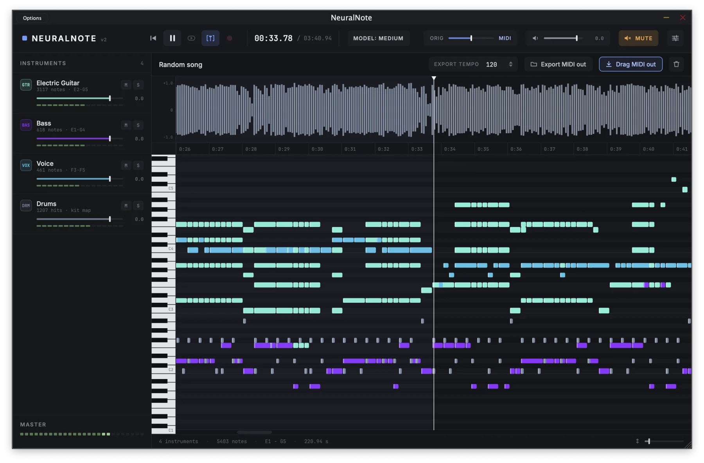

Works on anything
A full mix or a single take: piano, guitars, bass, strings, brass, woodwinds, synths, vocals and drums. NeuralNote picks out each part and writes down its notes.
Free audio plugin · VST3 · AU · Standalone
NeuralNote transcribes audio to MIDI right inside your DAW.
Powered by the state-of-the-art MuScriptor model, it handles anything from a single instrument to a full
mix, sorts the notes by instrument, and runs entirely on your machine.
Version 2.0.0 · Intel Macs and Linux: build from source, installers coming later · All releases

Features
A full mix or a single take: piano, guitars, bass, strings, brass, woodwinds, synths, vocals and drums. NeuralNote picks out each part and writes down its notes.
Everything runs on your own computer, on its GPU or CPU. Your audio never leaves it. NeuralNote only goes online to download models and check for updates.
Notes appear in the piano roll as they're transcribed. Play them through the built-in synth, blend them with the original recording, and set the level of each instrument, or mute and solo it.
Drag the MIDI into your session, with one track per instrument, or save it as a MIDI file.
How to use
Record straight from an audio input, or play the track in your DAW and record it in the plugin. You can also drop an audio file onto NeuralNote or browse for one.
Select the ones in the recording, or choose Automatic. Naming the right ones usually gives a better result.
It runs in the background with a progress bar, and you can cancel at any time. Press play whenever you like to hear what's done so far.
Drag it into your DAW or save it as a file.
Start again: double click the bin icon to clear everything and transcribe something new.
Models and performance
MuScriptor comes in three sizes: smaller models are faster, larger ones give more accurate transcriptions. Download the ones you want from inside NeuralNote, and switch between them at any time.
Speed depends on your hardware. A GPU is usually much faster than the CPU.
| Size | Parameters | Download | Speed on GPU | Speed on CPU |
|---|---|---|---|---|
small | ~103M | ~210 MB | ~3.5× | ~2× |
medium | ~307M | ~620 MB | ~1.5× | ~0.7× |
large | ~1.4B | ~2.7 GB | ~0.5× | not recommended |
Measured on an Apple M1 Pro. Speed is relative to the length of the audio: at 2×, a four-minute song is transcribed in about two minutes, and at 0.5× in about eight. NeuralNote transcribes recorded audio, not live input in real time.
Powered by MuScriptor
MuScriptor is a state-of-the-art multi-instrument transcription model from Kyutai and Mirelo, trained on real recordings across many genres. NeuralNote runs it on your own machine, right inside your DAW.
Want to try the model before installing anything? Kyutai hosts an online demo that transcribes in your browser, on their servers.
FAQ
An audio plugin (VST3, AU and Standalone app) that turns audio into MIDI. You put it on the track you want to transcribe, and it gives you MIDI notes you can drag back into your DAW.
Yes.
NeuralNote is: its code is published on GitHub under the Apache-2.0 license. The MuScriptor model weights it uses are under the CC BY-NC 4.0 license and can't be used commercially.
No. Transcription runs entirely on your machine. NeuralNote only goes online to download models and to check for updates.
No. A GPU only makes transcription faster. NeuralNote finds the devices available on your machine and uses the best one automatically: Metal on macOS, Vulkan on Windows and Linux, or the CPU. You can still pick one yourself in Settings > Compute device.
35 instrument groups, from piano, guitars and bass to strings, brass, woodwinds, voice, synths and drums.
You can tell it which ones are in the recording, or let it detect them with Automatic.
Results tend to be better when it's given the right set.
No. The model predicts when each note starts and ends, its pitch and its instrument. It doesn't estimate how hard a note was played, nor the song's tempo, time signature or key.
There are installers for macOS on Apple Silicon (Standalone app, VST3 and AU) and for Windows x64 (Standalone app and VST3). The Windows installer isn't code signed yet, so Windows may warn you the first time you run it. On Intel Macs and Linux you can build it from source for now.
v1 used Spotify's Basic Pitch, a small model that transcribes one instrument at a time. v2 replaces it with MuScriptor. v1 releases are still available on GitHub.
If you have a GitHub account, open an issue on GitHub. Otherwise, send an email (see below). Please include your OS, GPU, DAW and model size.
Contact
Found a bug or have an idea?
If you have a GitHub account, open an issue on GitHub.
Otherwise, or for anything else, email: